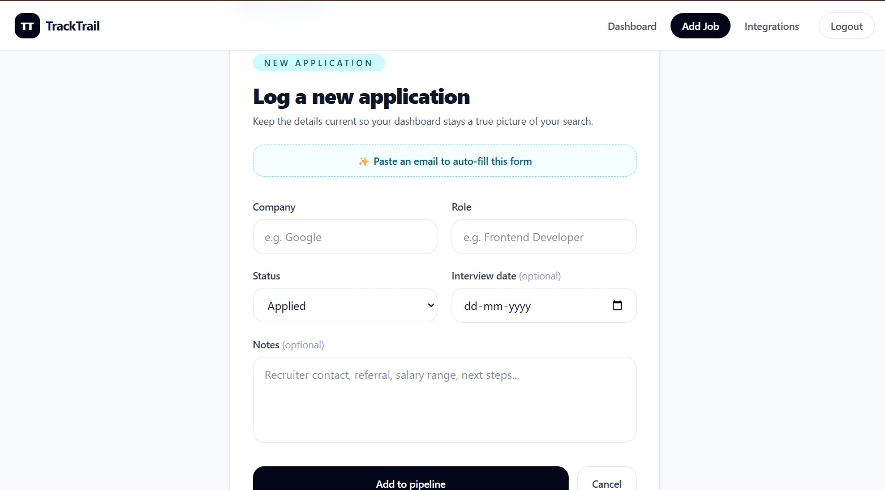
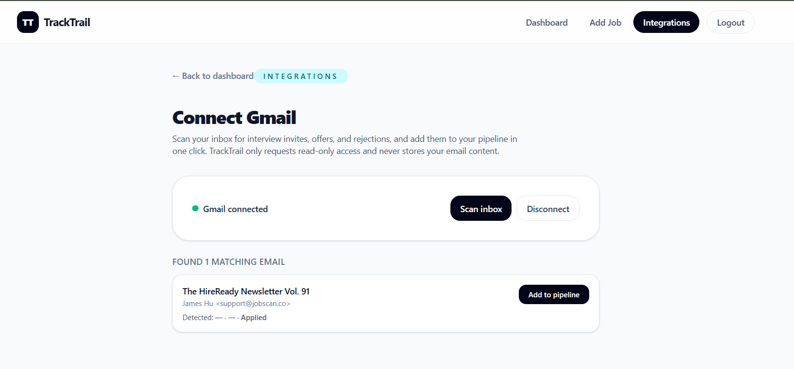
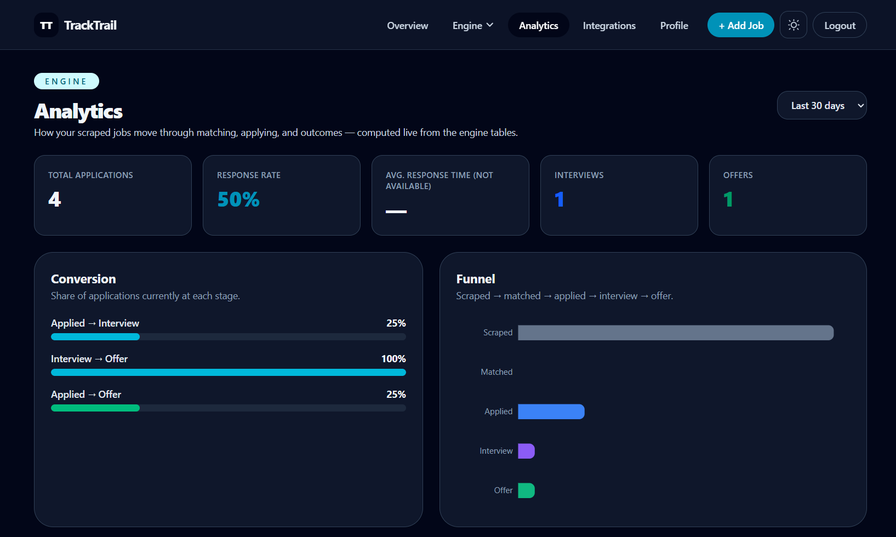
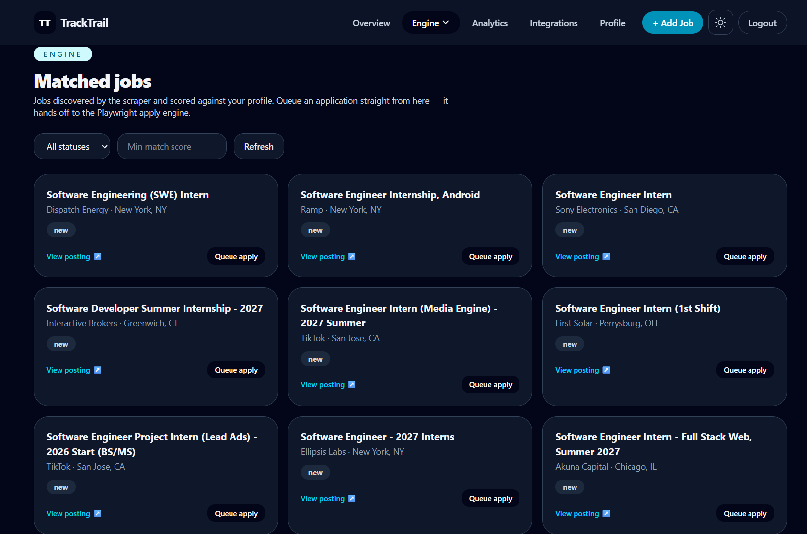

Job Application Tracker — Ingestion, Matching & Analytics Engine
A React/Vite + Express + PostgreSQL job tracker extended into a full ingestion, matching and analytics pipeline, powered by a BullMQ/Redis worker fleet running as its own process.
Problem
Job seekers applying to dozens of roles lose track of stages fast — spreadsheets don't scale. Worse, manually reading every new listing and judging fit against your own profile wastes hours that should go into actual applications.
Solution
A centralized React/Vite + Express + PostgreSQL (Prisma ORM) tracker handles the core CRUD workflow, extended with a second system: a BullMQ/Redis worker fleet that ingests listings from four channels — manual entry, Gmail inbox scanning, a Manifest V3 browser extension, and a live discovery API — deduplicates them, scores them against a stored profile with TF-IDF and optional embeddings, semi-automates the apply flow via Playwright (stopping before the final submit click), and feeds a live per-user analytics dashboard.
Features
- Full CRUD job tracker: company, role, status, interview date & notes
- JWT authentication (bcryptjs) with per-user data isolation
- Unified ingestion: manual entry, Gmail inbox scanning (Google OAuth2, read-only), a Manifest V3 browser extension, and the Remotive discovery API
- Ingestion pipeline: normalize → dedup → insert → enqueue match
- TF-IDF + keyword matcher, plus a provider-agnostic embeddings scorer
- Learning service nudges per-skill weights from interview/offer/rejection outcomes
- Human-in-the-loop apply engine via Playwright (stops before final submit)
- Per-user analytics dashboard (Recharts): response-rate and stage-conversion funnel, computed live from each user's own tracked jobs
Architecture
- API process (Express 5) stays thin — all heavy work (ingestion, scraping, matching, applying, analytics) runs across five dedicated BullMQ workers in a separate Node process, so a Playwright crash never takes the API down
- Data access is Prisma-first; a thin
$queryRawUnsafewrapper (lib/prisma.js) covers the SQL-heavy analytics, dedup and learning-loop queries - Single hosted PostgreSQL instance shared by both the original tracker (
users,tracked_jobs) and the new engine (jobs,companies,applications,match_scores,user_profile,job_sources,analytics_daily,scrape_runs) - Matching is provider-agnostic:
scoreEmbedding()takes an injectedembedFnso it isn't locked to one AI vendor - Deduplication runs exact-hash first, then fuzzy (Jaro-Winkler title + TF-IDF description) before insert
- Job discovery is adapter-based: Remotive's public API is genuinely wired up, while LinkedIn/Indeed adapters honestly report 'unavailable' — no partner API access, and the project deliberately avoids scraping or anti-bot bypasses to fake results
Technology Stack
Challenges
- Redis-backed token-bucket rate limiter, capped per target domain, with randomized human-like delays to avoid hammering source sites
- Workers run as their own process (
npm run worker) so ingestion/apply load never blocks user-facing API requests - ATS field selectors are adapter-based (
adapters/) — extending to a new job board means adding an adapter, not rewriting the engine - Next steps called out directly in the repo: add a stage-history table so analytics can measure 'ever reached Interview/Offer' instead of only current status, and move matching to pgvector-backed embeddings once the corpus outgrows TF-IDF
Results / Impact



